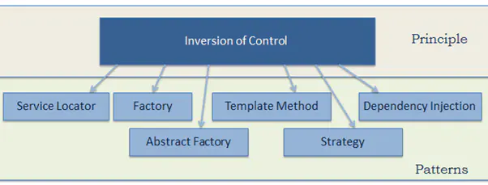
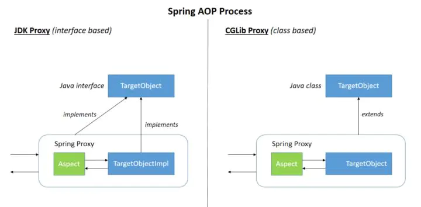
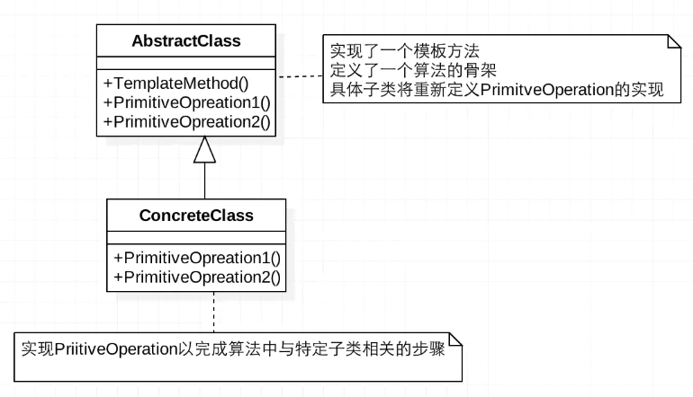
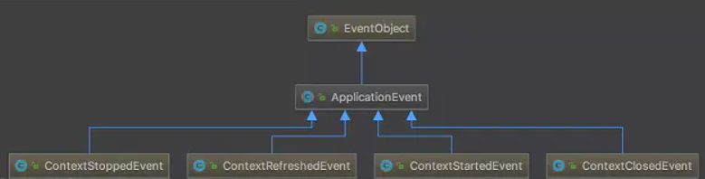
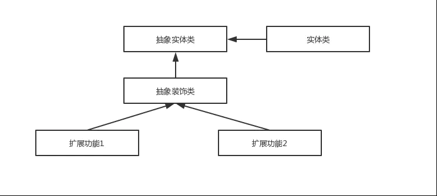
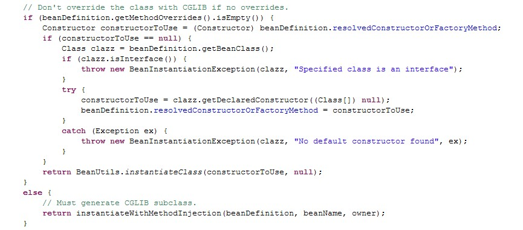
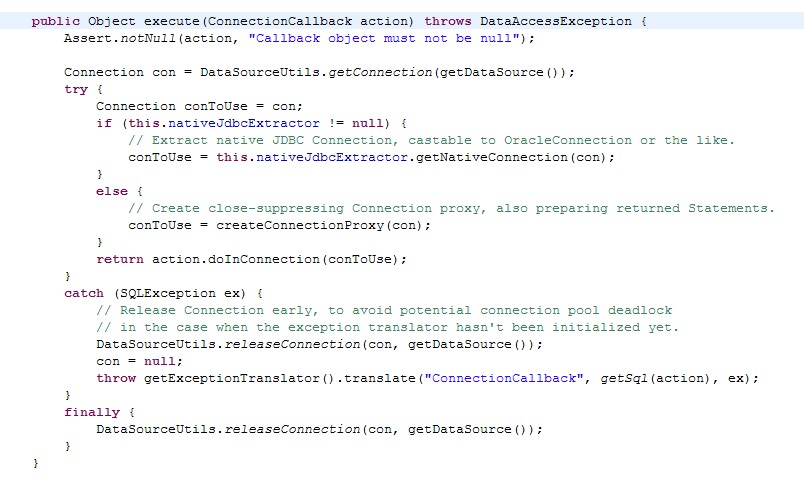
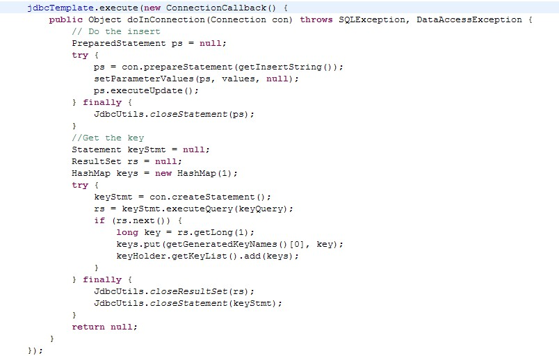

- 代理模式：AOP
- 单例模式：默认 Bean 为单例
- 工厂模式：BeanFactory
- IOC：依赖倒置 or 依赖注入
- MVC：spring web
- 模版方法模式：JdbcTemplate
控制反转(IoC)和依赖注入(DI)
IoC(Inversion of Control,控制翻转) 是Spring 中一个非常非常重要的概念，它不是什么技术，而是一种解耦的设计思想。它的主要目的是借助于“第三方”(Spring 中的 IOC 容器) 实现具有依赖关系的对象之间的解耦(IOC容易管理对象，你只管使用即可)，从而降低代码之间的耦合度。IOC 是一个原则，而不是一个模式，以下模式（但不限于）实现了IoC原则。

Spring IOC 容器就像是一个工厂一样，当我们需要创建一个对象的时候，只需要配置好配置文件/注解即可，完全不用考虑对象是如何被创建出来的。 IOC 容器负责创建对象，将对象连接在一起，配置这些对象，并从创建中处理这些对象的整个生命周期，直到它们被完全销毁。
在实际项目中一个 Service 类如果有几百甚至上千个类作为它的底层，我们需要实例化这个 Service，你可能要每次都要搞清这个 Service 所有底层类的构造函数，这可能会把人逼疯。如果利用 IOC 的话，你只需要配置好，然后在需要的地方引用就行了，这大大增加了项目的可维护性且降低了开发难度。关于Spring IOC 的理解，推荐看这一下知乎的一个回答：www.zhihu.com/question/23… ，非常不错。
控制翻转怎么理解呢? 举个例子："对象a 依赖了对象 b，当对象 a 需要使用 对象 b的时候必须自己去创建。但是当系统引入了 IOC 容器后， 对象a 和对象 b 之前就失去了直接的联系。这个时候，当对象 a 需要使用 对象 b的时候， 我们可以指定 IOC 容器去创建一个对象b注入到对象 a 中"。 对象 a 获得依赖对象 b 的过程,由主动行为变为了被动行为，控制权翻转，这就是控制反转名字的由来。
DI(Dependecy Inject,依赖注入)是实现控制反转的一种设计模式，依赖注入就是将实例变量传入到一个对象中去。
工厂设计模式
Spring使用工厂模式可以通过 BeanFactory 或 ApplicationContext 创建 bean 对象。
两者对比：
BeanFactory：延迟注入(使用到某个 bean 的时候才会注入),相比于BeanFactory来说会占用更少的内存，程序启动速度更快。ApplicationContext：容器启动的时候，不管你用没用到，一次性创建所有 bean 。BeanFactory仅提供了最基本的依赖注入支持，ApplicationContext扩展了BeanFactory,除了有BeanFactory的功能还有额外更多功能，所以一般开发人员使用ApplicationContext会更多。
ApplicationContext的三个实现类：
ClassPathXmlApplication：把上下文文件当成类路径资源。FileSystemXmlApplication：从文件系统中的 XML 文件载入上下文定义信息。XmlWebApplicationContext：从Web系统中的XML文件载入上下文定义信息。
Example:
import org.springframework.context.ApplicationContext;
import org.springframework.context.support.FileSystemXmlApplicationContext;
public class App {
public static void main(String[] args) {
ApplicationContext context = new FileSystemXmlApplicationContext(
"C:/work/IOC Containers/springframework.applicationcontext/src/main/resources/bean-factory-config.xml");
HelloApplicationContext obj = (HelloApplicationContext) context.getBean("helloApplicationContext");
obj.getMsg();
}
}
单例设计模式
在我们的系统中，有一些对象其实我们只需要一个，比如说：线程池、缓存、对话框、注册表、日志对象、充当打印机、显卡等设备驱动程序的对象。事实上，这一类对象只能有一个实例，如果制造出多个实例就可能会导致一些问题的产生，比如：程序的行为异常、资源使用过量、或者不一致性的结果。
使用单例模式的好处:
- 对于频繁使用的对象，可以省略创建对象所花费的时间，这对于那些重量级对象而言，是非常可观的一笔系统开销；
- 由于 new 操作的次数减少，因而对系统内存的使用频率也会降低，这将减轻 GC 压力，缩短 GC 停顿时间。
Spring 中 bean 的默认作用域就是 singleton(单例)的。 除了 singleton 作用域，Spring 中 bean 还有下面几种作用域：
- prototype : 每次请求都会创建一个新的 bean 实例。
- request : 每一次HTTP请求都会产生一个新的bean，该bean仅在当前HTTP request内有效。
- session : 每一次HTTP请求都会产生一个新的 bean，该bean仅在当前 HTTP session 内有效。
- global-session： 全局session作用域，仅仅在基于portlet的web应用中才有意义，Spring5已经没有了。Portlet是能够生成语义代码(例如：HTML)片段的小型Java Web插件。它们基于portlet容器，可以像servlet一样处理HTTP请求。但是，与 servlet 不同，每个 portlet 都有不同的会话
Spring 实现单例的方式：
- xml : ``
- 注解：
@Scope(value = "singleton")
Spring 通过 ConcurrentHashMap 实现单例注册表的特殊方式实现单例模式。Spring 实现单例的核心代码如下
// 通过 ConcurrentHashMap（线程安全） 实现单例注册表
private final Map<String, Object> singletonObjects = new ConcurrentHashMap<String, Object>(64);
public Object getSingleton(String beanName, ObjectFactory<?> singletonFactory) {
Assert.notNull(beanName, "'beanName' must not be null");
synchronized (this.singletonObjects) {
// 检查缓存中是否存在实例
Object singletonObject = this.singletonObjects.get(beanName);
if (singletonObject == null) {
//...省略了很多代码
try {
singletonObject = singletonFactory.getObject();
}
//...省略了很多代码
// 如果实例对象在不存在，我们注册到单例注册表中。
addSingleton(beanName, singletonObject);
}
return (singletonObject != NULL_OBJECT ? singletonObject : null);
}
}
//将对象添加到单例注册表
protected void addSingleton(String beanName, Object singletonObject) {
synchronized (this.singletonObjects) {
this.singletonObjects.put(beanName, (singletonObject != null ? singletonObject : NULL_OBJECT));
}
}
}
代理设计模式
代理模式在 AOP 中的应用
AOP(Aspect-Oriented Programming:面向切面编程)能够将那些与业务无关，却为业务模块所共同调用的逻辑或责任（例如事务处理、日志管理、权限控制等）封装起来，便于减少系统的重复代码，降低模块间的耦合度，并有利于未来的可拓展性和可维护性。
Spring AOP 就是基于动态代理的，如果要代理的对象，实现了某个接口，那么Spring AOP会使用JDK Proxy，去创建代理对象，而对于没有实现接口的对象，就无法使用 JDK Proxy 去进行代理了，这时候Spring AOP会使用Cglib ，这时候Spring AOP会使用 Cglib 生成一个被代理对象的子类来作为代理，如下图所示：

当然你也可以使用 AspectJ ,Spring AOP 已经集成了AspectJ ，AspectJ 应该算的上是 Java 生态系统中最完整的 AOP 框架了。
使用 AOP 之后我们可以把一些通用功能抽象出来，在需要用到的地方直接使用即可，这样大大简化了代码量。我们需要增加新功能时也方便，这样也提高了系统扩展性。日志功能、事务管理等等场景都用到了 AOP 。
Spring AOP 和 AspectJ AOP 有什么区别?
Spring AOP 属于运行时增强，而 AspectJ 是编译时增强。 Spring AOP 基于代理(Proxying)，而 AspectJ 基于字节码操作(Bytecode Manipulation)。
Spring AOP 已经集成了 AspectJ ，AspectJ 应该算的上是 Java 生态系统中最完整的 AOP 框架了。AspectJ 相比于 Spring AOP 功能更加强大，但是 Spring AOP 相对来说更简单，
如果我们的切面比较少，那么两者性能差异不大。但是，当切面太多的话，最好选择 AspectJ ，它比Spring AOP 快很多。
模板方法
模板方法模式是一种行为设计模式，它定义一个操作中的算法的骨架，而将一些步骤延迟到子类中。 模板方法使得子类可以不改变一个算法的结构即可重定义该算法的某些特定步骤的实现方式。

public abstract class Template {
//这是我们的模板方法
public final void TemplateMethod(){
PrimitiveOperation1();
PrimitiveOperation2();
PrimitiveOperation3();
}
protected void PrimitiveOperation1(){
//当前类实现
}
//被子类实现的方法
protected abstract void PrimitiveOperation2();
protected abstract void PrimitiveOperation3();
}
public class TemplateImpl extends Template {
@Override
public void PrimitiveOperation2() {
//当前类实现
}
@Override
public void PrimitiveOperation3() {
//当前类实现
}
}
Spring 中 jdbcTemplate、hibernateTemplate 等以 Template 结尾的对数据库操作的类，它们就使用到了模板模式。一般情况下，我们都是使用继承的方式来实现模板模式，但是 Spring 并没有使用这种方式，而是使用Callback 模式与模板方法模式配合，既达到了代码复用的效果，同时增加了灵活性。
观察者模式
观察者模式是一种对象行为型模式。它表示的是一种对象与对象之间具有依赖关系，当一个对象发生改变的时候，这个对象所依赖的对象也会做出反应。Spring 事件驱动模型就是观察者模式很经典的一个应用。Spring 事件驱动模型非常有用，在很多场景都可以解耦我们的代码。比如我们每次添加商品的时候都需要重新更新商品索引，这个时候就可以利用观察者模式来解决这个问题。
Spring 事件驱动模型中的三种角色
事件角色
ApplicationEvent (org.springframework.context包下)充当事件的角色,这是一个抽象类，它继承了java.util.EventObject并实现了 java.io.Serializable接口。
Spring 中默认存在以下事件，他们都是对 ApplicationContextEvent 的实现(继承自ApplicationContextEvent)：
ContextStartedEvent：ApplicationContext启动后触发的事件;ContextStoppedEvent：ApplicationContext停止后触发的事件;ContextRefreshedEvent：ApplicationContext初始化或刷新完成后触发的事件;ContextClosedEvent：ApplicationContext关闭后触发的事件。

事件监听者角色
ApplicationListener 充当了事件监听者角色，它是一个接口，里面只定义了一个 onApplicationEvent（）方法来处理ApplicationEvent。ApplicationListener接口类源码如下，可以看出接口定义看出接口中的事件只要实现了 ApplicationEvent就可以了。所以，在 Spring中我们只要实现 ApplicationListener 接口实现 onApplicationEvent() 方法即可完成监听事件
package org.springframework.context;
import java.util.EventListener;
@FunctionalInterface
public interface ApplicationListener<E extends ApplicationEvent> extends EventListener {
void onApplicationEvent(E var1);
}
复制代码
事件发布者角色
ApplicationEventPublisher 充当了事件的发布者，它也是一个接口。
@FunctionalInterface
public interface ApplicationEventPublisher {
default void publishEvent(ApplicationEvent event) {
this.publishEvent((Object)event);
}
void publishEvent(Object var1);
}
复制代码
ApplicationEventPublisher 接口的publishEvent（）这个方法在AbstractApplicationContext类中被实现，阅读这个方法的实现，你会发现实际上事件真正是通过ApplicationEventMulticaster来广播出去的。具体内容过多，就不在这里分析了，后面可能会单独写一篇文章提到。
Spring 的事件流程总结
- 定义一个事件: 实现一个继承自
ApplicationEvent，并且写相应的构造函数； - 定义一个事件监听者：实现
ApplicationListener接口，重写onApplicationEvent()方法； - 使用事件发布者发布消息: 可以通过
ApplicationEventPublisher的publishEvent()方法发布消息。
Example:
// 定义一个事件,继承自ApplicationEvent并且写相应的构造函数
public class DemoEvent extends ApplicationEvent{
private static final long serialVersionUID = 1L;
private String message;
public DemoEvent(Object source,String message){
super(source);
this.message = message;
}
public String getMessage() {
return message;
}
// 定义一个事件监听者,实现ApplicationListener接口，重写 onApplicationEvent() 方法；
@Component
public class DemoListener implements ApplicationListener<DemoEvent>{
//使用onApplicationEvent接收消息
@Override
public void onApplicationEvent(DemoEvent event) {
String msg = event.getMessage();
System.out.println("接收到的信息是："+msg);
}
}
// 发布事件，可以通过ApplicationEventPublisher 的 publishEvent() 方法发布消息。
@Component
public class DemoPublisher {
@Autowired
ApplicationContext applicationContext;
public void publish(String message){
//发布事件
applicationContext.publishEvent(new DemoEvent(this, message));
}
}
当调用 DemoPublisher 的 publish() 方法的时候，比如 demoPublisher.publish("你好") ，控制台就会打印出:接收到的信息是：你好 。
适配器模式
适配器模式(Adapter Pattern) 将一个接口转换成客户希望的另一个接口，适配器模式使接口不兼容的那些类可以一起工作，其别名为包装器(Wrapper)。
spring AOP中的适配器模式
我们知道 Spring AOP 的实现是基于代理模式，但是 Spring AOP 的增强或通知(Advice)使用到了适配器模式，与之相关的接口是AdvisorAdapter 。Advice 常用的类型有：BeforeAdvice（目标方法调用前,前置通知）、AfterAdvice（目标方法调用后,后置通知）、AfterReturningAdvice(目标方法执行结束后，return之前)等等。每个类型Advice（通知）都有对应的拦截器:MethodBeforeAdviceInterceptor、AfterReturningAdviceAdapter、AfterReturningAdviceInterceptor。Spring预定义的通知要通过对应的适配器，适配成 MethodInterceptor接口(方法拦截器)类型的对象（如：MethodBeforeAdviceInterceptor 负责适配 MethodBeforeAdvice）。
spring MVC中的适配器模式
在Spring MVC中，DispatcherServlet 根据请求信息调用 HandlerMapping，解析请求对应的 Handler。解析到对应的 Handler（也就是我们平常说的 Controller 控制器）后，开始由HandlerAdapter 适配器处理。HandlerAdapter 作为期望接口，具体的适配器实现类用于对目标类进行适配，Controller 作为需要适配的类。
为什么要在 Spring MVC 中使用适配器模式？ Spring MVC 中的 Controller 种类众多，不同类型的 Controller 通过不同的方法来对请求进行处理。如果不利用适配器模式的话，DispatcherServlet 直接获取对应类型的 Controller，需要的自行来判断，像下面这段代码一样：
if(mappedHandler.getHandler() instanceof MultiActionController){
((MultiActionController)mappedHandler.getHandler()).xxx
}else if(mappedHandler.getHandler() instanceof XXX){
...
}else if(...){
...
}
复制代码
假如我们再增加一个 Controller类型就要在上面代码中再加入一行 判断语句，这种形式就使得程序难以维护，也违反了设计模式中的开闭原则 – 对扩展开放，对修改关闭。
装饰者模式
装饰者模式可以动态地给对象添加一些额外的属性或行为。相比于使用继承，装饰者模式更加灵活。简单点儿说就是当我们需要修改原有的功能，但我们又不愿直接去修改原有的代码时，设计一个Decorator套在原有代码外面。其实在 JDK 中就有很多地方用到了装饰者模式，比如 InputStream家族，InputStream 类下有 FileInputStream (读取文件)、BufferedInputStream (增加缓存,使读取文件速度大大提升)等子类都在不修改InputStream 代码的情况下扩展了它的功能。

Spring 中配置 DataSource 的时候，DataSource 可能是不同的数据库和数据源。我们能否根据客户的需求在少修改原有类的代码下动态切换不同的数据源？这个时候就要用到装饰者模式(这一点我自己还没太理解具体原理)。Spring 中用到的包装器模式在类名上含有 Wrapper或者 Decorator。这些类基本上都是动态地给一个对象添加一些额外的职责
总结
Spring 框架中用到了哪些设计模式？
- 工厂设计模式 : Spring使用工厂模式通过
BeanFactory、ApplicationContext创建 bean 对象。 - 代理设计模式 : Spring AOP 功能的实现。
- 单例设计模式 : Spring 中的 Bean 默认都是单例的。
- 模板方法模式 : Spring 中
jdbcTemplate、hibernateTemplate等以 Template 结尾的对数据库操作的类，它们就使用到了模板模式。 - 包装器设计模式 : 我们的项目需要连接多个数据库，而且不同的客户在每次访问中根据需要会去访问不同的数据库。这种模式让我们可以根据客户的需求能够动态切换不同的数据源。
- 观察者模式: Spring 事件驱动模型就是观察者模式很经典的一个应用。
- 适配器模式 :Spring AOP 的增强或通知(Advice)使用到了适配器模式、spring MVC 中也是用到了适配器模式适配
Controller。 - ......
第一种：简单工厂
又叫做静态工厂方法（StaticFactory Method）模式，但不属于23种GOF设计模式之一。 简单工厂模式的实质是由一个工厂类根据传入的参数，动态决定应该创建哪一个产品类。 spring中的BeanFactory就是简单工厂模式的体现，根据传入一个唯一的标识来获得bean对象，但是否是在传入参数后创建还是传入参数前创建这个要根据具体情况来定。如下配置，就是在 HelloItxxz 类中创建一个 itxxzBean。
<beans>
<bean id="singletonBean" class="com.itxxz.HelloItxxz">
<constructor-arg>
<value>Hello! 这是singletonBean!value>
</constructor-arg>
</ bean>
<bean id="itxxzBean" class="com.itxxz.HelloItxxz"
singleton="false">
<constructor-arg>
<value>Hello! 这是itxxzBean! value>
</constructor-arg>
</bean>
</beans>
第二种：工厂方法（Factory Method）
通常由应用程序直接使用new创建新的对象，为了将对象的创建和使用相分离，采用工厂模式,即应用程序将对象的创建及初始化职责交给工厂对象。
一般情况下,应用程序有自己的工厂对象来创建bean.如果将应用程序自己的工厂对象交给Spring管理,那么Spring管理的就不是普通的bean,而是工厂Bean。
以工厂方法中的静态方法为例讲解一下：
import java.util.Random;
public class StaticFactoryBean {
public static Integer createRandom() {
return new Integer(new Random().nextInt());
}
}
建一个config.xm配置文件，将其纳入Spring容器来管理,需要通过factory-method指定静态方法名称
<bean id="random"
class="example.chapter3.StaticFactoryBean" factory-method="createRandom"
//createRandom方法必须是static的,才能找到 scope="prototype"
/>
测试:
public static void main(String[] args) {
//调用getBean()时,返回随机数.如果没有指定factory-method,会返回StaticFactoryBean的实例,即返回工厂Bean的实例
XmlBeanFactory factory = new XmlBeanFactory(new ClassPathResource("config.xml"));
System.out.println("我是IT学习者创建的实例:"+factory.getBean("random").toString());
}
第三种：单例模式（Singleton）
保证一个类仅有一个实例，并提供一个访问它的全局访问点。 spring中的单例模式完成了后半句话，即提供了全局的访问点BeanFactory。但没有从构造器级别去控制单例，这是因为spring管理的是是任意的java对象。 核心提示点：Spring下默认的bean均为singleton，可以通过singleton=“true|false” 或者 scope=“？”来指定
第四种：适配器（Adapter）
在Spring的Aop中，使用的Advice（通知）来增强被代理类的功能。Spring实现这一AOP功能的原理就使用代理模式（1、JDK动态代理。2、CGLib字节码生成技术代理。）对类进行方法级别的切面增强，即，生成被代理类的代理类， 并在代理类的方法前，设置拦截器，通过执行拦截器重的内容增强了代理方法的功能，实现的面向切面编程。
Adapter类接口：Target
public interface AdvisorAdapter {
boolean supportsAdvice(Advice advice){
MethodInterceptor getInterceptor(Advisor advisor);
}
MethodBeforeAdviceAdapter类，Adapter
class MethodBeforeAdviceAdapter implements AdvisorAdapter, Serializable {
public boolean supportsAdvice(Advice advice) {
return (advice instanceof MethodBeforeAdvice);
}
public MethodInterceptor getInterceptor(Advisor advisor) {
MethodBeforeAdvice advice = (MethodBeforeAdvice) advisor.getAdvice();
return new MethodBeforeAdviceInterceptor(advice);
}
}
第五种：包装器（Decorator)
在我们的项目中遇到这样一个问题：我们的项目需要连接多个数据库，而且不同的客户在每次访问中根据需要会去访问不同的数据库。我们以往在spring和hibernate框架中总是配置一个数据源，因而sessionFactory的dataSource属性总是指向这个数据源并且恒定不变，所有DAO在使用sessionFactory的时候都是通过这个数据源访问数据库。但是现在，由于项目的需要，我们的DAO在访问sessionFactory的时候都不得不在多个数据源中不断切换，问题就出现了：如何让sessionFactory在执行数据持久化的时候，根据客户的需求能够动态切换不同的数据源？我们能不能在spring的框架下通过少量修改得到解决？是否有什么设计模式可以利用呢？ 首先想到在spring的applicationContext中配置所有的dataSource。这些dataSource可能是各种不同类型的，比如不同的数据库：Oracle、SQL Server、MySQL等，也可能是不同的数据源：比如apache 提供的org.apache.commons.dbcp.BasicDataSource、spring提供的org.springframework.jndi.JndiObjectFactoryBean等。然后sessionFactory根据客户的每次请求，将dataSource属性设置成不同的数据源，以到达切换数据源的目的。 spring中用到的包装器模式在类名上有两种表现：一种是类名中含有Wrapper，另一种是类名中含有Decorator。基本上都是动态地给一个对象添加一些额外的职责。
第六种：代理（Proxy)
为其他对象提供一种代理以控制对这个对象的访问。 从结构上来看和Decorator模式类似，但Proxy是控制，更像是一种对功能的限制，而Decorator是增加职责。 spring的Proxy模式在aop中有体现，比如JdkDynamicAopProxy和Cglib2AopProxy。
第七种：观察者（Observer)
定义对象间的一种一对多的依赖关系，当一个对象的状态发生改变时，所有依赖于它的对象都得到通知并被自动更新。 spring中Observer模式常用的地方是listener的实现。如ApplicationListener。
第八种：策略（Strategy）
定义一系列的算法，把它们一个个封装起来，并且使它们可相互替换。本模式使得算法可独立于使用它的客户而变化。 spring中在实例化对象的时候用到Strategy模式 在SimpleInstantiationStrategy中有如下代码说明了策略模式的使用情况： 
第九种：模板方法（Template Method)
定义一个操作中的算法的骨架，而将一些步骤延迟到子类中。Template Method使得子类可以不改变一个算法的结构即可重定义该算法的某些特定步骤。 Template Method模式一般是需要继承的。这里想要探讨另一种对Template Method的理解。spring中的JdbcTemplate，在用这个类时并不想去继承这个类，因为这个类的方法太多，但是我们还是想用到JdbcTemplate已有的稳定的、公用的数据库连接，那么我们怎么办呢？我们可以把变化的东西抽出来作为一个参数传入JdbcTemplate的方法中。但是变化的东西是一段代码，而且这段代码会用到JdbcTemplate中的变量。怎么办？那我们就用回调对象吧。在这个回调对象中定义一个操纵JdbcTemplate中变量的方法，我们去实现这个方法，就把变化的东西集中到这里了。然后我们再传入这个回调对象到JdbcTemplate，从而完成了调用。这可能是Template Method不需要继承的另一种实现方式吧。
以下是一个具体的例子： JdbcTemplate中的execute方法 
JdbcTemplate执行execute方法 